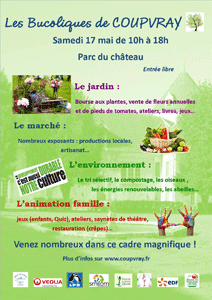
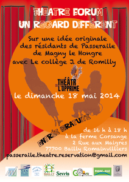
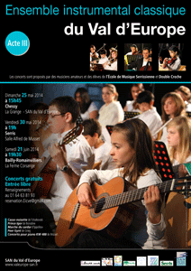

|
|
 |
| Centre Social Intercommunal |
| Du mercredi 5 février au samedi 30 août, médiathèques du Val d'Europe |
Du mercredi 5 février au samedi 30 août 2014, le réseau des médiathèques du SAN du Val d'Europe vous invite à découvrir sa nouvelle exposition sur le thème de l'eau : un parcours documentaire, multi-supports, original et ludique à travers les collections de la Médiathèque du Val d'Europe.
Une journée d'ouverture est organisée le samedi 8 février à la Médiathèque du Val d'Europe : Ateliers créatifs, spectacle, conférence… seront proposés pour l'occasion.
> + d'infos
> Site du réseau des médiathèques du Val d'Europe
|
|
 |
| Du 5 mai au 27 juin, service Accueil Famille, Hôtel de Ville |
Inscriptions annuelles aux écoles (sauf première inscription en petite section de maternelle) et aux activités périscolaires (accueils périscolaires, restauration scolaire, Temps d'Activité Périscolaire) pour l'année scolaire 2014-2015.
Le service Accueil Famille sera ouvert les samedis 7, 14 et 21 juin de 9h00 à 12h00. |
|
|
| Jeudi 8 mai, 11h00, départ du cortège à la Mairie du Bourg |
La Muncicipalité vous convie à participer à la cérémonie de Commémoration du 8 mai 1945 qui aura lieu le jeudi 8 mai 2014, à 11 heures.
Départ du cortège : Mairie du Bourg.
Une gerbe, en mémoire des Serrissiens morts pour la France, sera déposée au Monument aux morts.
Cette cérémonie sera suivie d'un vin d'honneur en Mairie du Bourg. |
|
 |
| BOURSE AUX VÊTEMENTS PRINTEMPS-ÉTÉ |
| Samedi 10 mai 2014, salle polyvalente Jules Verne |
Salle polyvalente Jules Verne
Rue Emile Cloud (à côté du centre social) SERRIS
Dépôt : Vendredi 9 mai de 17h30 à 20h30
Vente : Samedi 10 mai de 9h à 17h
Retrait des gains et invendus Dimanche 11 mai de 11h à 12h.
Informations sur le site : dansevaldeurope.fr ou 07.70.96.60.54 |
|
 |
| INSCRIPTION CENTRE DE LOISIRS VACANCES D'ÉTÉ |
| VENTE DE FLEURS À L'ESAT "LA GRANGE AU BOIS" |
C'est le printemps, le temps des plantations !
Comme chaque année en Avril et Mai, l'atelier horticulture propose aux amateurs de jardinage un large choix de plantes à massif, géraniums, plants de légumes, etc…
Ouvert du lundi au vendredi de 9h à 12h et de 13h à 17h, ainsi que tous les samedis du mois de Mai.
*Journées Prix PROMO les 9 - 10 et 12 Mai 2014.
Plus d'infos au : 01 60 94 23.11 ou 01 60 94 23 03
ESAT "La Grange au Bois"
24 bis, Avenue Raymond Poincaré
77400 LAGNY SUR MARNE
TEL : 01 60 94 23 00 |
|
|
| Mercredi 14 mai, 14h30 -16h30, Parc des Communes |
Les animations ouvertes sont des animations gratuites organisées par les animateurs du centre de loisirs à destination de tous les enfants de Serris, même ceux qui ne sont pas inscrits au centre de loisirs.
"La Chasse aux énigmes"
Pour les 9-12 ans
Mercredi 14 mai de 14h30 à 16h30, Parc des Communes
Animation gratuite.
- Annulation systématique des animations en cas de pluie
- Conditions obligatoires pour la participation aux animations : avoir le numéro de téléphone des parents.
- Nous conseillons fortement de prévoir une tenue confortable avec baskets, un sac à dos avec casquette et bouteille d'eau.
|
|
 |
| Mercredi 14 mai et samedi 17 mai |
| Événement festif à destination des parents, des enfants et professionnels de la Petite Enfance.
Structures gonflables, mini-spectacles de magie, animations, lectures, jeux, parcours de motricité…
-
Mercredi 14 mai, salle Céleste de Chessy
- 20h00 : Conférence : communiquer avec les enfants, les aider à grandir.
- Samedi 17 mai, de 9h30 à 14h00, parc du Château de Chessy
- de 9h30 à 11h30 : animations et spectacle Pouêt le clown et Héléna.
- 11h30 : concert Roger Cactus
- 12h30 : pique-nique
Renseignements : 01 60 43 66 26
Accès libre et gratuit.
vielocale@valeurope-san.fr
www.valeurope-san.fr. |
|
 |
| Vendredi 16 mai 2014, 20h00, Maison communale des 4 Saisons |
Conférences sur l'art moderne et contemporain
Entrée libre
> En savoir + |
|
|
| LES BUCOLIQUES DE COUPVRAY |
| Samedi 17 mai, de 10h à 18h, Parc du Château de Coupvray |
Le samedi 17 mai, la ville de Coupvray organise "les Bucoliques de Coupvray". Ce sera l'occasion d'accueillir dans le cadre de l'espace Rohan les visiteurs autour de plusieurs pôles :
- Le jardin : une bourse aux plantes, une vente de pieds de tomates produites par les enfants de l'école, des ateliers (bouturage, greffage), des jeux sur les plantes odorantes, la vente de plants de fleurs, des livres de jardinage…
- Le marché : productions locales (cidre, miel…) avec la participation des Marchés de producteurs de pays, artisanat et produits naturels (poterie, savons, thé), présentation de l'AMAP du Val d'Europe…
- L'environnement et le développement durable: stands sur le tri sélectif, le compostage, les oiseaux avec la LPO, les énergies renouvelables, le recyclage, les abeilles…
- L'animation : jeux (concours de dessins d'enfants, Quiz…) avec la participation du Centre de loisirs et de l'Espace Jeunesse, saynètes avec l'AC Théâtre, jeu sur les plantes odorantes avec la participation du Musée Louis Braille, expo photos (Zoom sur les petites bêtes), restauration (crêpes)…
Quelques temps forts :
- Visites découverte du parc avec la Ligue de Protection des Oiseaux (11h30 et 16h).
- Les Ados de l'AC Théâtre joueront à 15h, en avant-première, des extraits de la pièce qu'ils présenteront en soirée à la salle polyvalente : "La Fontaine, le clown et les écolos".
- À 16h, seront remis les prix du concours de dessins d'enfants organisé par l'Accueil de loisirs.
- À 17h, débat sur le développement durable.
Plus de quarante exposants, artisans, producteurs seront présents. L'entrée est libre. Venez nombreux pour les rencontrer et découvrir ce parc de 45 ha au cœur du Val d'Europe.
Programme et plus d'infos sur www.coupvray.fr |
|
 |
| |
 |
| HBCVE - HANDBALL - CHAMPIONNAT DE FRANCE NATIONALE 3 |
| Samedi 17 mai, 20h30, gymnase Olympe de Gouges, Entrée libre |
HBCVE vs Rueil AC Handball
Senior équipe A, catégorie plus de 16 ans Garçons 1
> www.hbcve.fr |
|
 |
| THÉÂTRE FORUM UN REGARD DIFFÉRENT |
| Dimanche 18 mai, de 16h à 18h, Ferme Corsange, Bailly-Romainvilliers - Gratuit |
Depuis plus de 6 mois, un groupe de huit résidants en situation de handicap (le centre La Passeraile de Magny-le-Hongre) a créé, écrit et mis en scène des scénettes de théâtre, imaginées à partir de situations vécues, dans le but de créer un Théâtre Forum autour des difficultés qu'ils vivent dans la vie quotidienne, et du regard que peuvent se porter personnes valides et personnes en situation de handicap. Puis, en cours d'année, un groupe de six collégiens du collège Jacqueline de Romilly a rejoint les acteurs pour participer à l'élaboration de ce théâtre-forum.
À partir d'une question d'actualité, les comédiens interprètent tout d'abord une scène au dénouement dramatique. Puis, le public, interrogé par le metteur en scène est invité à réfléchir sur comment affronter les conflits joués. Devenu "SpectActeur", entrant en scène, se confrontant aux autres personnages, remplaçant ou créant de nouveaux personnages, il met en action ses idées, ses alternatives, sa volonté de changer la situation.
Entrée gratuite. Sur réservation : passeraile.theatre.reservation@gmail.com
|
|
 |
| |
|
Les animations ouvertes sont des animations gratuites organisées par les animateurs du centre de loisirs à destination de tous les enfants de Serris, même ceux qui ne sont pas inscrits au centre de loisirs.
"La ronde des jeux"
Pour les 3-4 ans
Mercredi 21 mai de 10h00 à 11h00 , place Thomas le Pileur
atelier : "Conte champêtre" et jeu: "jeu de chat et autres animaux"
Pour les 4-5 ans
Mercredi 21 mai de 14h30 à 16h00, Parc des Communes
Animations gratuites.
- Annulation systématique des animations en cas de pluie
- Conditions obligatoires pour la participation aux animations : avoir le numéro de téléphone des parents.
- Nous conseillons fortement de prévoir une tenue confortable avec baskets, un sac à dos avec casquette et bouteille d'eau.
> Télécharger le programme complet des animations ouvertes |
|
|
| TEST DE DÉPISTAGE VIH À RÉSULTAT IMMÉDIAT |
| Vendredi 23 mai, de 17h00 à 23h00, place d'Ariane (face au RER) |
Le service Jeunesse de la Ville de Serris et ses partenaires vous proposent une opération de test de dépistage VIH à résultat immédiat, le vendredi 23 mai 2014, de 17h00 à 23h00, place d'Ariane, face à la gare RER Val d'Europe.
Pour plus d'infos :
Tél. : 01 60 06 05 05
mail : fcollin@aides.org
|
|
 |
Métro, boulot, dodo,
difficile de prendre le temps pour faire connaissance avec ses voisins…
Une fois par an, Quartier en Fête est un moment privilégié pour faire connaissance avec ses voisins. La ville de Serris vous invite à organiser cet événement au sein de votre résidence, immeuble ou quartier.
La ville se tient à votre disposition pour vous aider dans la préparation de cet événement en vous procurant un kit spécial, que vous pourrez venir retirer à l'accueil de l'Hôtel de Ville du 9 au 23 mai 2014.
Le vendredi 23 mai prochain, sortez les tables de camping, les chaises pliantes et prenez possession de votre quartier en compagnie de vos voisins ! |
|
 |
| Vendredi 23 mai 2014, 20h00, Maison communale des 4 Saisons |
| Dimanche 25 mai 2014, de 13h30 à 18h00, Parc du Château de Chessy |
Dimanche 25 mai de 13h30 à 18h au parc du château de Chessy, 35 associations locales vont se mettre en quatre pour vous séduire et vous distraire. C'est gratuit et ouvert à tous.
Programme : démonstrations de danse, concerts de musique classique et de musiques actuelles, acrobaties, jongleries, atelier maquillage, château gonflable, pêche, parcours pédagogique « nature » dans le parc du Château, dédicaces de livres, expositions de peintures…sans oublier le traditionnel concours de dessins pour les enfants de 3 à 10 ans.
Nouveauté : Concours de photo "Selfie" (ouvert à tous) : viens avec ton téléphone portable et prends-toi en photo "selfie" dans les allées de la fête de la culture. Plus d'infos sur le stand du SAN.
Manifestation organisée par le SAN du Val d'Europe.
Renseignements complémentaires :
SAN du Val d'Europe - service Vie locale au 01 60 43 66 26
vielocale@valeurope-san.fr
www.valeurope-san.fr. (Rubrique Culture et Loisirs)
Retrouvez la fête de la culture sur le Facebook du SAN du Val d'Europe |
|
 |
| |
|
| Dimanche 25 mai, de 8h00 à 18h00, bureaux de vote |
N'oubliez pas de vous munir d'une pièce d'identité pour voter. |
|
|
| ATT SERRIS VAL D'EUROPE - PRO A FÉMININE |
| Mardi 27 mai, 19h30, gymnase Éric Tabarly |
| RAMASSAGE DES ORDURES EXTRA-MÉNAGÈRES |
Dates de ramassage des Ordures extra-ménagères 2014
Mercredi 26 février 2014, mercredi 28 mai 2014, mercredi 17 septembre 2014 et mercredi 17 décembre 2014.
Les encombrants ne doivent être sortis que la veille des jours indiqués ci-dessus.
> + d'infos |
|
|
Les animations ouvertes sont des animations gratuites organisées par les animateurs du centre de loisirs à destination de tous les enfants de Serris, même ceux qui ne sont pas inscrits au centre de loisirs.
Atelier "C'est de l'art"
Pour les 6-7 ans
Mercrdi 28 mai de 14h30 à 16h00, Parc des Communes (près de la Maison Équinoxe)
Animation gratuite.
- Annulation systématique des animations en cas de pluie
- Conditions obligatoires pour la participation aux animations : avoir le numéro de téléphone des parents.
- Nous conseillons fortement de prévoir une tenue confortable avec baskets, un sac à dos avec casquette et bouteille d'eau.
> Télécharger le programme complet des animations ouvertes |
|
|
| RENC'ART DES ATELIERS |
| Vendredi 30 mai, 19h00, samedi 31 mai et dimanche 1er juin de 10h00 à 19h00, Ferme des Communes |
Peinture ....Toile é moi
Cours d'arts graphiques urbains .... Kham & Léon
Vitrail à plomb, grisaille, tifany, .... Les chênes vitrail
Marie-Laure Griffe.... Atelier modelage sculpture
...les associations culturelles de Serris s'exposent
- Vernissage : vendredi 30 mai à 19h00, avec la participation de l'Ensemble instrumental classique du Val d'Europe.
- Exposition : samedi 31 mai et dimanche 1er juin,
de 10h00 à 19h00.
Entrée libre
|
|
 |
| ENSEMBLE INSTRUMENTAL CLASSIQUE DU VAL D'EUROPE |
Concerts proposés par des musiciens amateurs et des élèves de l'École de Musique Serrissienne et Double Croche.
Dimanche 25 mai, à 15h45, Chessy, La Grange, SAN du Val d'Europe.
Vendredi 30 mai, à 19h00, Serris, La Ferme des Communes.
Samedi 21 juin, 19h30, Bailly-Romainvilliers, La Ferme Corsange.
Concerts gratuits, entrée libre.
Renseignements au 01 64 63 81 93
Reservation : Eicve@gmail.com
www.valeurope-san.fr |
|
 |
| Samedi 31 mai, 9h30, restaurant scolaire du collège Madeleine Renaud |
Dictée géante à plusieurs niveaux : CP, CE1, CE2, CM1, CM2, 6e, ados et adultes. Tout le monde suit la dictée. Les CP s'arrêtent en premier, puis les CE1, puis les CE2 etc.… Correction le jour même.
La dictée est inventée par les enseignants qui s'appuient sur les compétences travaillées dans chaque classe au cours de l'année 2013/2014.
Entrée libre |
| HBCVE - HANDBALL - MATCH AU PROFIT D'AFRIKAN ID |
| Samedi 31 mai, 19h30, gymnase Olympe de Gouges |
Luc Abalo, Didier Dinart, Ibrahim Diaw, Ibrahima Sall, Antonio Garcia, Arnaud Bingo, Patrice Annonay + autres surprises
Tarif adulte : 10 €
Tarif enfant : (- 18 ans) : 5 €
Sur place ou précommande par courrier chèque à l'ordre de HBCVE
à envoyer à HBCVE, 121 route de Montigny - 77450 Lesches
> www.hbcve.fr |
|
 |
|
|
|